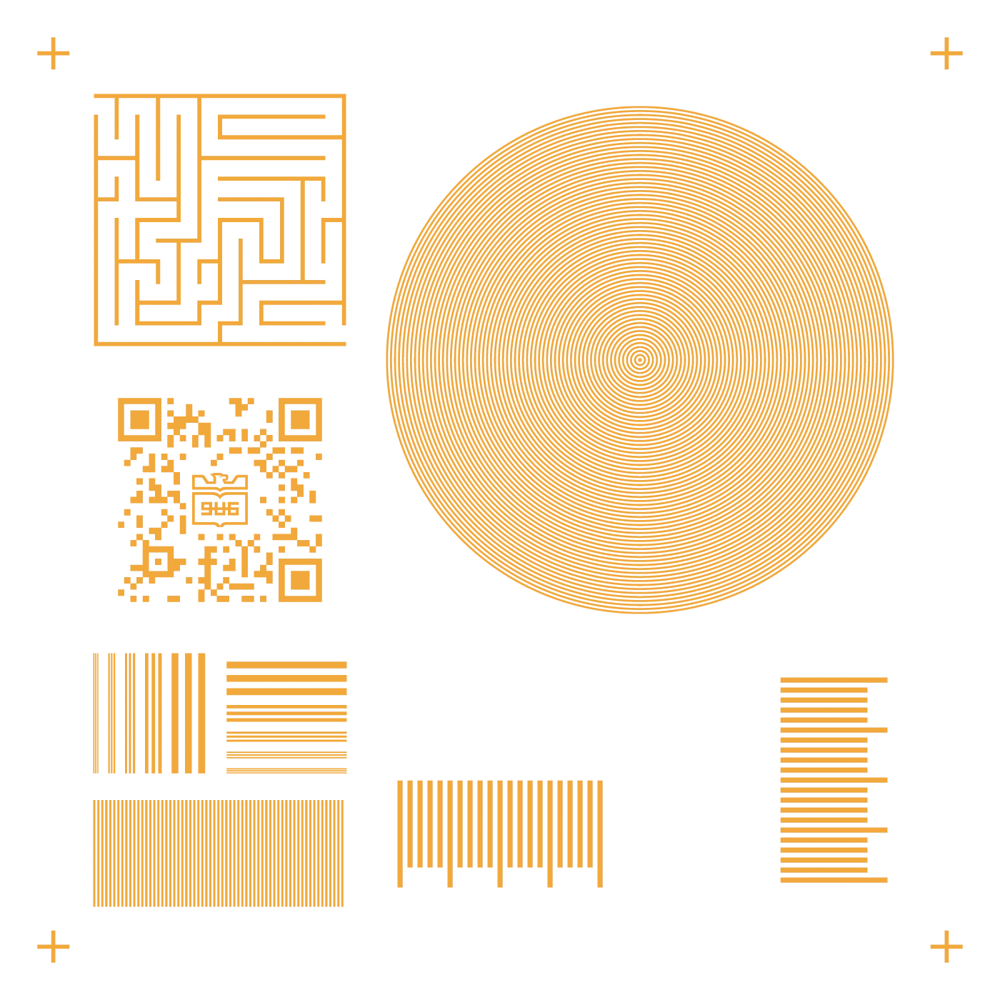
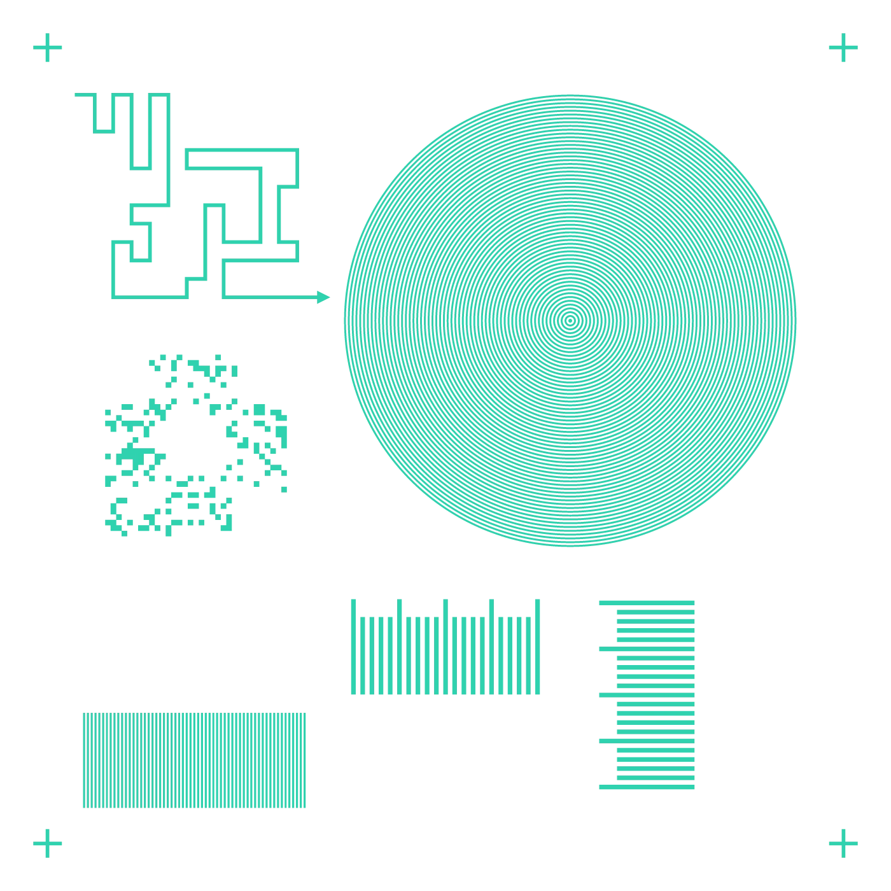
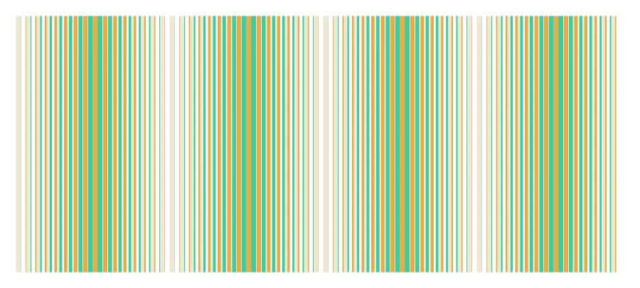
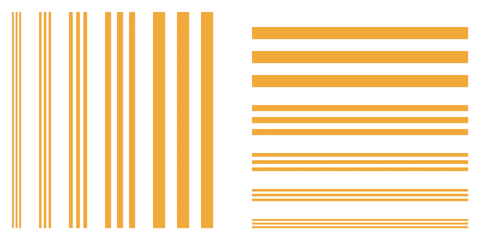
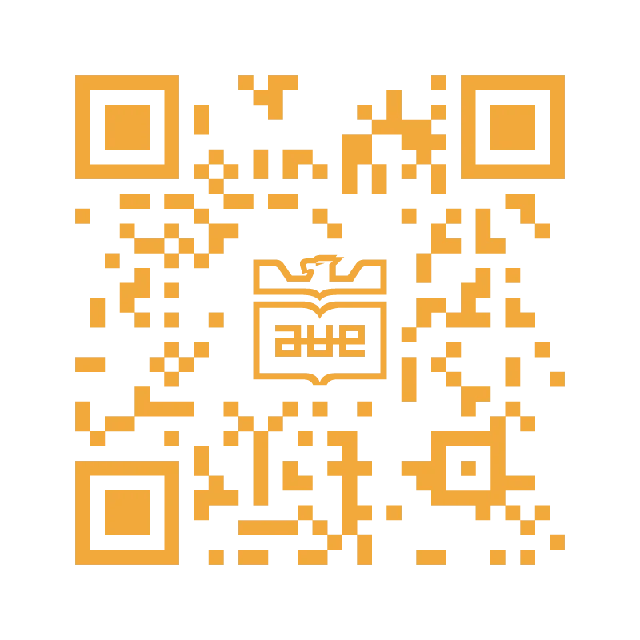
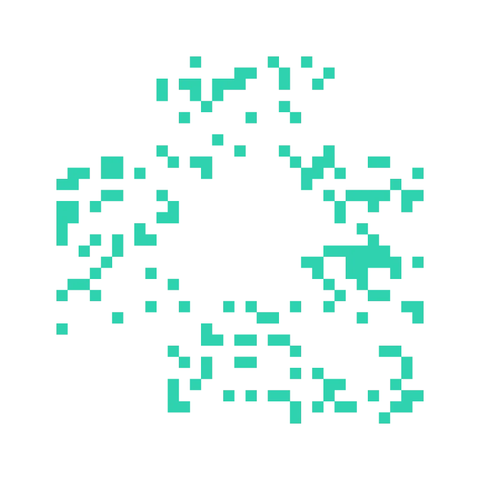

과녁 모아레
오차를 15배로 키워서 본다
패턴 1에는 주기 60 µm, 패턴 2에는 주기 64 µm 동심원을 넣었습니다. 두 층이 d만큼 어긋나면 모아레 무늬의 중심이 반대 방향으로 15d만큼 움직입니다.
반경 3.81 mm · 범위 ±32 µm
3조 포토마스크
15 × 15 mm 유리 기판에 같은 금속을 두 번 올려 만드는 칩입니다. 두 층이 얼마나 정확하게 겹쳤는지 칩 위의 패턴으로 바로 확인할 수 있게 설계했습니다.


겹친 모습패턴 1 위에 패턴 2를 정렬해서 올린 칩
패턴 1패턴 2두 층이 겹친 곳CAD 방향 기준
1층과 2층은 같은 금속이라 현미경으로 봐도 색으로는 구분이 안 됩니다. 그래서 두 층의 위치 관계가 모양으로 드러나는 패턴을 넣었습니다. 미로의 벽과 길, 간격이 5 µm 다른 두 버니어, 주기가 4 µm 다른 두 동심원, 그리고 두 층에 나눠 넣은 QR입니다.
공정
패턴 1로 노광, 증착, 리프트오프를 하고 그 위에 패턴 2를 정렬해서 같은 과정을 한 번 더 합니다. 포지티브 PR을 쓰기 때문에 금속은 마스크에서 빛이 통과한 자리에 남습니다.
region으로 채운 부분은 마스크에서 빛을 막습니다. 패턴 자리로 들어간 빛만 PR을 감광시킵니다.
포지티브 PR이라 빛을 받은 부분이 현상액에 녹아 나가고, 그 자리의 유리가 드러납니다.
PR 위와 드러난 유리 위에 금속이 함께 증착됩니다.
PR을 제거하면 그 위에 있던 금속도 같이 떨어지고, 유리에 바로 붙은 패턴만 남습니다.
네 귀퉁이의 정렬 마커를 1층에 맞춘 다음 패턴 2로 같은 과정을 반복합니다.
금속은 region이 없는 자리에 남습니다. 그래서 region 파일은 칩 전체 영역에서 패턴을 뺀 모양으로 만들었습니다.
region = 프레임 − 패턴패턴
마커·미로·QR로 정렬이 대략 맞았는지 보고, 버니어·모아레로 오차를 정밀하게 잽니다. 선폭 테스트는 공정이 몇 µm까지 표현되는지 확인하는 용도입니다.
과녁 모아레
패턴 1에는 주기 60 µm, 패턴 2에는 주기 64 µm 동심원을 넣었습니다. 두 층이 d만큼 어긋나면 모아레 무늬의 중심이 반대 방향으로 15d만큼 움직입니다.
반경 3.81 mm · 범위 ±32 µm
미로 + 탈출 경로
벽은 패턴 1, 길은 패턴 2에 그렸습니다. 저배율에서도 바로 보여서 크게 틀어졌는지 먼저 확인할 수 있습니다.
선폭 60 µm · 벽까지 여유 95 µm
정렬 마커
십자 480 × 60 µm × 4

직선 모아레
두 층이 θ만큼 돌아가면 줄무늬가 약 15θ 기울어집니다.

버니어 X · Y
패턴 1은 150 µm, 패턴 2는 155 µm 간격으로 눈금을 21개씩 넣었습니다. 가장 잘 맞는 눈금이 k번째면 오차는 −5k µm입니다. Y 방향은 같은 구조를 90° 돌려 옆에 배치했습니다.
분해능 5 µm · 범위 ±50 µm
선폭 테스트
15, 20, 30, 50, 100 µm 선을 세로와 가로로 3줄씩 넣었습니다.

2층 분할 QR
배치
여백 1.4 mm, 칸 3.8 mm, 간격 0.4 mm 격자 위에 모든 패턴을 올렸습니다. 번호를 누르면 해당 패턴 설명으로 이동합니다.
정렬 읽기
완성된 칩은 아래 순서대로 확인합니다. 앞 단계에서 이미 크게 틀어졌으면 거기서 끝이고, 통과하면 다음 단계에서 더 작은 오차를 읽습니다.
2차 노광 때 네 귀퉁이의 십자를 겹쳐서 맞춥니다.
길이 벽에 닿으면 이 정도 이상 틀어진 것입니다.
스캔이 되면 오차가 대략 20 µm 이내입니다.
가장 잘 맞는 눈금 번호 k로 Δ = −5k µm. ±50 µm까지 읽습니다.
무늬 중심이 움직인 거리를 15로 나누면 오차입니다. 방향은 반대이고, ±32 µm까지 읽습니다.
직선 모아레의 줄무늬가 약 15θ 기울어집니다.
슬라이더로 패턴 2를 움직이면 각 패턴에서 어떻게 보이는지 확인할 수 있습니다. 모아레는 실제 링 주기(60 / 64 µm)로 계산했고, 회전은 빼고 평행 이동만 넣었습니다.
모아레는 정밀하지만 이번 공정에서 제대로 나올지 확신할 수 없고, 버니어는 확실하지만 5 µm 단위까지만 읽힙니다. 미로와 QR은 수치 대신 되는지 안 되는지로 바로 판단할 수 있습니다. 한 가지가 제대로 안 나와도 다른 패턴으로 정렬을 확인할 수 있게 같이 넣었습니다.
2층 분할 QR
QR의 위치 찾기 패턴과 가운데 학교 마크, 데이터 절반은 패턴 1에, 나머지 데이터 절반은 패턴 2에 넣었습니다. 한 층만으로는 스캔이 안 되고, 두 층이 제대로 겹쳐야 이 페이지로 연결됩니다.


칩을 흰 화면 위에 올리고 가까이서 찍으면 잘 읽힙니다. 안 되면 칩을 뒤집어서 다시 찍어 보세요.
제작 기록
제출한 CAD 도면은 눌러서 µm 단위까지 확대해 볼 수 있습니다. 공정 사진은 진행되는 대로 추가할 예정입니다.